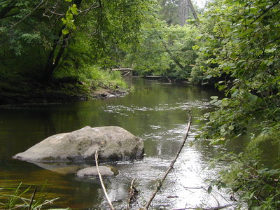

Памятники природы Виштынецкой возвышенности
Памятники природы «Озеро Виштынецкое» и «Река Красная»
В старой версии музейного сайта указано, что эти уникальные природные объекты были объявлены памятниками природы в 1974 году как объекты, имеющие большое природно-историческое и научно-познавательное значение и нуждающиеся в особой охране.
В исходном тексте также приводилось общее правило: природные объекты и комплексы, объявленные памятниками природы, полностью изымаются из хозяйственного использования; запрещается деятельность, причиняющая вред памятнику природы и окружающей его природной среде либо ухудшающая его состояние и охрану.
Памятник природы «Озеро Виштынецкое»
Виштынецкое озеро — самое крупное, самое глубокое, самое чистое и, пожалуй, самое богатое озеро Калининградской области. Поверхность его водного зеркала занимает более 16 км², а максимальная глубина достигает 52 метров.
Питаясь водой многочисленных родников и ручьёв Виштынецкой возвышенности, озеро представляет огромный резервуар пресной воды. Единственной рекой, вытекающей из него, является Писса, которая через реки Анграпу и Преголю соединяет Виштынец с морем.
В озере обитает 22 вида рыб, среди которых ряпушка, угорь, сиг, линь, налим и другие. Богат и разнообразен мир беспозвоночных животных озера: он включает микроскопических рачков, моллюсков, личинок насекомых и червей, связанных с многочисленными водорослями.
Зимой озеро замерзает.

Памятник природы «Река Красная»
Живописен и необычен ландшафт реки Красной — ещё одного памятника природы Виштынецкой возвышенности. В исходном тексте музейного сайта описан участок поймы протяжённостью 18 километров, начинающийся у границы с Польшей, где берёт начало река.
Её берега, поросшие лесами вековых деревьев, с многочисленными родниками, песчаными и каменистыми осыпями, уединёнными намывными лугами поражают своей природной красотой.
На берегах реки Красной произрастают редкие для Калининградской области виды растений, в том числе дремлик широколистный Epipactis helleborine, тайник яйцевидный Listera ovata, лунник оживающий Lunaria rediviva и другие.
Из леса к реке подходят звериные тропы, протоптанные косулями, оленями и кабанами к водопою. Здесь можно встретить и следы деятельности бобра. Река Красная собирает чистую воду с лесных холмов Виштынецкой возвышенности и несёт её в море, сливаясь с рекой Писсой.
Примечание к восстановлению. Численные показатели, сведения о статусе охраны и формулировки законодательства перенесены из прежней версии сайта и требуют актуальной проверки перед окончательной публикацией.